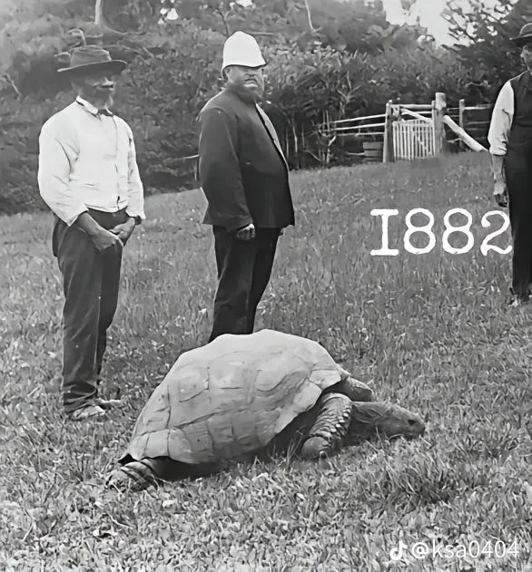
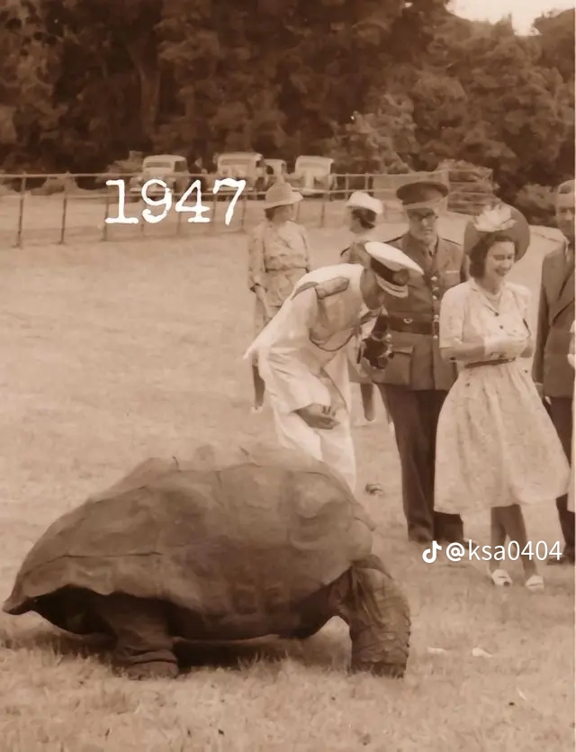
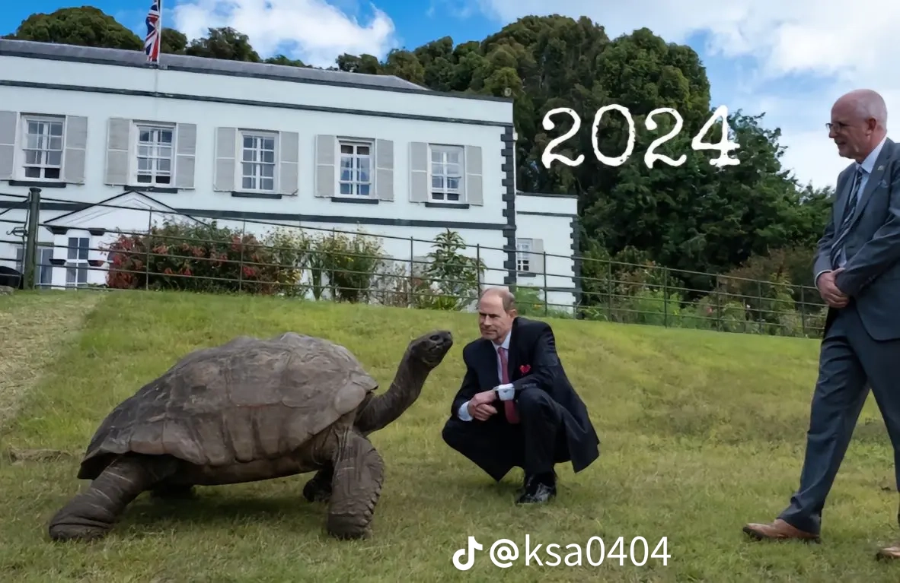

애완인간들이 먼저 죽음 ㅠ
대충 헌종때 태어났다고 함



애완인간들이 먼저 죽음 ㅠ
대충 헌종때 태어났다고 함
극복하려 하지말고 떠오를때마다 충분히 슬퍼해
우우우!!!!!
시바 지금 9개월인데 넘 슬프다
나중에 어쩌노 시벌..
저 거북이는 얼마나 슬프겠냐
이거 뭔거 존나 뻘하게 터지네 ㅋㅋㅋㅋㅋㅋㅋㅋㅋㅋ
내가 그래서 댕댕이 다시 못키움...ㅜ
아고 위로한다
댕댕이 : 야 쟤 또 운다 ㅋㅋㅋㅋ
극복하려고하는게 상당히 사람을 방전시킨다 그냥 받아들이려고하는게 좋음..
나도 보내준지 5년 된 강아지 그리워서 가끔 퇴근하고 현관문 열면서 OO아~ 이러면서 들어가곤함
그냥 가끔 그러고 싶은 날이 있음
가슴 속에 커다란 얼음덩어리를 품고 있는거라고 생각해라
한번씩 생각날때마다 얼음덩어리를 바라보고 눈물로 녹여내라
그렇게 몇십년 녹여내다보면 그 커다랗던 얼음덩어리가 조그마한 조각으로 남을거고, 무지개다리 건너갔던 댕댕이가 마중나올 날도 가까워지겠지
저승에 가면 반려인간이 마중나온다고 한다
FAT로스 증후군이 훨 심함. 얼마나 심한지, 요요로 되돌아가는 경우도 많음
저 거북이의 평균 수명이 어떻게 되길래 ㅋㅋㅋ
ai한테 물어보니까 야생 평균 100~150이라고 하고
저 거북은 193세라고 함
아마 환경만 갖춰지면 200세 이상 살듯
우와 엄청 장수하네

현....종?
영국이가.
인간이는 너무 짧게 살아 ㅠㅠ
집안 어르신이네
서부시대때도 살아있던게 레전드네 ㅋㅋㅋㅋㅋ
집사 증손자야 오늘은 국이 짜구나
어휴 너그 고조는 양식도 안되는 동물들로 밥 잘 뽑던데 넌 뭐냐?
중금속 농축된 양 엄청날듯
유우리 레오 들어봐라 ㅈㄴ 눈물버튼임
1882년부터 태어난것도 아니고
이미 큼지막한 왕거북이인게 호러네 ㅋㅋㅋ
중간에 바꿔치기한거 아니냐?
진짜 저렇게 오래살아?
헌종-철종-고종-순종
미친ㅋㅋㅋㅋㅋㅋㅋㅋㅋㅋㅋㅋ
짐승수명이 신진대사와 맞물려서 신체크기에 영향을 많이받던데 거북이는 사이즈대비 수명이 왜 저리길까?
움직임이 느리듯이 호흡도 엄청 깊게하나?
쟤네 움직이는거봐라 그냥 다 느린듯
교미할 때는 좀 빠르지 않을까?
파충류가 수명 긴 애들이 좀 있지 않나
신진대사도 느릴테고
오래살긴하네
부럽네
인간도 오래살면 좋겠다..
100년 산다는 말은 듣긴 들었는데 진짜네.
그냥 과장 좀 보태서 하는 말인줄 알았는데
궁금하네. 어떤 차이로 수명의 길고 짧음이 결정 되는지
영국여왕보다 오래 살았굼
여담인데 4년전에 무지개다리 건너간 우리집 댕댕이
아직도 극복못하고 우울하거나 술취할때마다 강아지 이름 부르면서 울음